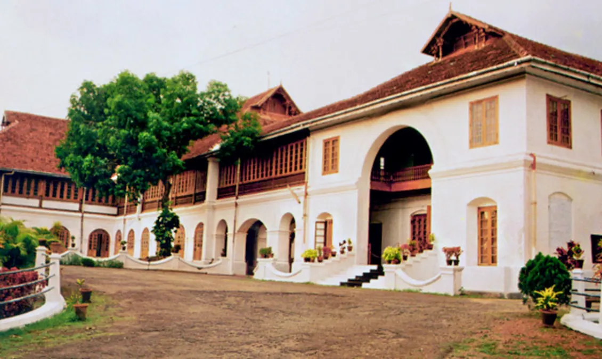

ERNAKULAM TOURISM ATTRACTIONS

Surely there are innumerable tourist places to visit in Kochi, also formerly known as Cochin, which is of interest related to history, nature, luxury or adventure. The financial capital of Kerala has a cosmopolitan culture added to that is nature’s bounty in different forms, thus making it an ideal place to holiday.
There are plethora of Kochi tourist places that attract a large number of visitors every year mainly because of its unspoilt natural beauty. Fort Kochi, Willingdon Island, Bolgatty Island, Wonderla Amusement park, a Folklore museum and the Kerala Kathakali centre are a few of the prime tourist destinations in Kochi.
Kochi also offers the best Seafood cuisine cooked the traditional way of doing justice to the fresh catches of the day. An evening spent watching the traditional art forms of Kerala unleashing the rich culture of this state.
Folklore Museum

Mangalavanam Bird Sanctuary

Hill Palace of Tripunithara
Museum of Kerala History, Edappally

Kerala Kathakali Centre